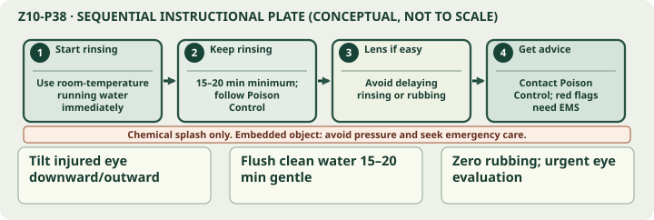

Z10-P38 · Wilderness medicine · New manuscript
Flush chemical splashes and loose surface grit gently from eyes
Dilute corrosive splashes or flush loose dust safely without scratching the cornea or delaying urgent eye care.
When it applies · Soap, stove fuel, sanitizer, insect-repellent splashes, or loose windblown dust/ash in the eye (no embedded sharp object).
Equipment · Clean potable water or sterile saline eyewash, clean cup/squeeze bottle, and emergency contacts.

Actions
- For a chemical splash, begin rinsing immediately with plenty of room-temperature running water. Continue for 15–20 minutes at minimum as directed by Poison Control. Do not delay while looking for sterile saline.[M18]
- Remove contact lenses if you can do so easily without delaying rinsing. Encourage blinking. Do not rub the eye or try to remove an embedded object.[M18]
- Contact Poison Control during or after irrigation for substance-specific next steps. Severe pain, impaired vision or a major exposure needs emergency evaluation.[M15, M18]
Failure recognition · Rubbing a gritty eye vigorously (scratching the cornea) or flushing a chemical splash across the nose bridge into the healthy eye.[M18]
Verify · Confirm outward drainage away from the clean eye, full 15–20 minute flush for chemicals, and zero rubbing.[M18, ED]
Stop or change course · If an object is embedded or penetration is suspected, avoid pressure and seek emergency care. This is a different branch from chemical irrigation.[M18]
Evidence and editorial notes
- M15 · National Capital Poison Center · First Aid for Poisonings (Current web edition)
- Section: First aid for swallowed, inhaled, skin and eye exposure; when to call 911 · Conditions: Suspected poisoning in the U.S.
Support: For collapse, seizure, breathing trouble or inability to wake call 911. Otherwise get timely poison-center advice. Do not induce vomiting.
Limitations: Substance and route determine immediate care. Keep rescuers away from contaminated scenes. · Conflicting evidence: See A02 claim audit for boundaries.
Editorial note: Separates 911 life-threat activation from Poison Control guidance. · Specialist reviewer: Medical toxicology and poison control
Primary source · checked 2026-11-25 - M18 · National Capital Poison Center · First Aid for Poisonings (Current web edition)
- Section: In the eye: immediate irrigation; after irrigation · Conditions: Liquid chemical splash in the eye; exclude embedded or penetrating injury
Support: Begin immediate room-temperature water irrigation for at least 15–20 minutes and obtain poison-center direction.
Limitations: Severe or persistent symptoms need urgent evaluation. A penetrating injury follows a separate no-pressure emergency care branch; consult ocular trauma guidance. · Conflicting evidence: See A02 claim audit for boundaries.
Editorial note: Core eye-trauma decision boundary in Z10. · Specialist reviewer: Ophthalmology and emergency medicine
Primary source · checked 2026-11-25
Source lineage · NIH MedlinePlus Eye Injuries; new manuscript · Classification · New manuscript.